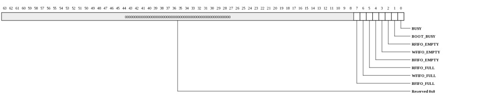
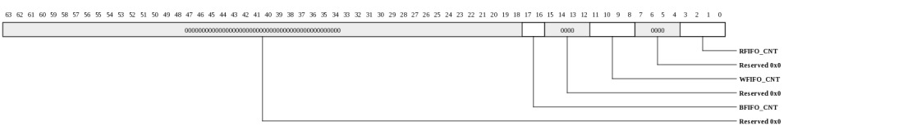
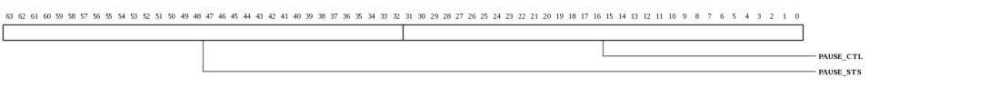
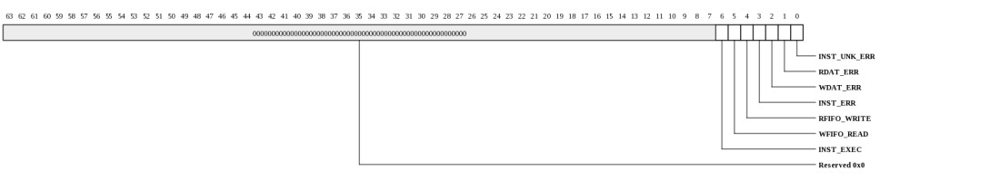

Register Summary
| Address | Register
| 0000 | SROM_DEV_INFO | 0008 | SROM_DEV_CTL | 0010 | SROM_MMIO_INFO | 0018 | SROM_MEM_INFO | 0020 | SROM_SCRATCHPAD | 0028 | SROM_SEMAPHORE0 | 0030 | SROM_SEMAPHORE1 | 0038 | SROM_CLOCK_COUNT | 0100 | SROM_BASELINE_CTL | 0108 | SROM_FLAG | 0110 | SROM_FIFO_COUNT | 0118 | SROM_ELECTRICAL_CONTROL | 0120 | SROM_BOOT_REVISION_ID | 0130 | SROM_WRITE_DATA | 0138 | SROM_READ_DATA | 0140 | SROM_ADDRESS | 0148 | SROM_BYTE | 0150 | SROM_INSTRUCTION | 0160 | SROM_PAGE_SIZE | 0170 | SROM_PAUSE | 0178 | SROM_RES_TYPE | 0180 | SROM_CODE_WREN | 0188 | SROM_CODE_WRDI | 0190 | SROM_CODE_RDID0 | 01a0 | SROM_CODE_RDSR | 01a8 | SROM_CODE_WRSR | 01b0 | SROM_CODE_READ | 01b8 | SROM_CODE_PP | 01c0 | SROM_CODE_SE0 | 01d0 | SROM_CODE_BE0 | 01e0 | SROM_CODE_DP | 01e8 | SROM_CODE_RES | 0200 | SROM_INT_VEC_W1TC | 0208 | SROM_INT_VEC_MASK | |
|---|
Register Definitions
Device Info (SROM_DEV_INFO: 0x0000)
This register provides general information about the device attached to this port and channel.
| Bits | Name | Type | Reset | Description
| 35:32 | INSTANCE | RO | HW | Instance ID for multi-instantiated devices. | 27:24 | REGISTER_REV | RO | 0 | Register format architectural revision. | 23:16 | DEVICE_REV | RO | HW | Device revision ID. | 11:0 | TYPE | RO | 022h | Encoded device Type - 34 to indicate SROM Controller |
|
|---|
Device Control (SROM_DEV_CTL: 0x0008)
This register provides general device control.
| Bits | Name | Type | Reset | Description
| 3 | SDN_ROUTE_ORDER | RW | 0 | When 1, packets sent on the SDN will be routed x-first. When 0, packets will be routed y-first. This setting must match the setting in the Tiles. Devices may have additional interfaces with customized route-order settings used in addition to or instead of this field. | 2 | RDN_ROUTE_ORDER | RW | 1 | When 1, packets sent on the RDN will be routed x-first. When 0, packets will be routed y-first. This setting must match the setting in the Tiles. Devices may have additional interfaces with customized route-order settings used in addition to or instead of this field. | |
|---|
MMIO Info (SROM_MMIO_INFO: 0x0010)
This register provides information about how the physical address is interpreted by the IO device. The PA is divided into {CHANNEL,SVC_DOM,IGNORED,REGION,OFFSET}. The values in this register define the size of each of these fields.
| Bits | Name | Type | Reset | Description
| 40:35 | REGION_WIDTH | RO | 0 | Size of the REGION field for this channel. The LSBs of the physical address are interpreted as {REGION,OFFSET} | 34:29 | OFFSET_WIDTH | RO | 16 | Size of the OFFSET field for this channel. The LSBs of the physical address are interpreted as {REGION,OFFSET} | 28:22 | NUM_SVC_DOM | RO | 0 | Number of service domains associated with this channel. | 21:19 | SVC_DOM_WIDTH | RO | 0 | Number of bits of service-domain specifier for this channel. The MSBs of the physical addrress are interpreted as {channel, service-domain} | 18:4 | NUM_CH | RO | 9 | Each configuration channel is mapped to a device having its own config registers. | 3:0 | CH_WIDTH | RO | 4 | Number of bits of channel specifier for all channels. The MSBs of the physical addrress are interpreted as {channel, service-domain} | |
|---|
Memory Info (SROM_MEM_INFO: 0x0018)
This register provides information about memory setup required for this device.
| Bits | Name | Type | Reset | Description
| 55:48 | NUM_TLB_ENT | RO | 0 | Number of IO TLB entries per ASID. | 47:40 | NUM_ASIDS | RO | 0 | Number of ASIDS supported if this device has an IO TLB (otherwise this field is zero). | 35:32 | NUM_HFH_TBL | RO | 0 | Number of hash-for-home tables that must be configured for this channel. | 31:0 | REQ_PORTS | RO | 32768 | Each bit represents a request (QDN) port on the tile fabric. Bit[15] represents the QDN port used for device configuration and is always set for devices implemented on channel-0. Bit[14] is the first port clockwise from the port used to access configuration space. Bit[13] is the second port in the clockwise direction. Bit[16] is the first port counter-clockwise from the port used to access configuration space. When a bit is set, the device has a QDN port at the associated location. For devices using a nonzero channel, this register may return all zeros. | |
|---|
Scratchpad (SROM_SCRATCHPAD: 0x0020)
Scratchpad
| Bits | Name | Type | Reset | Description
| 63:0 | SCRATCHPAD | RW | 0 | Scratchpad | |
|---|
Semaphore0 (SROM_SEMAPHORE0: 0x0028)
Semaphore
| Bits | Name | Type | Reset | Description
| 0 | VAL | RW | 0 | When read, the current semaphore value is returned and the semaphore is set to 1. Bit can also be written to 1 or 0. | |
|---|
Semaphore1 (SROM_SEMAPHORE1: 0x0030)
Semaphore
| Bits | Name | Type | Reset | Description
| 0 | VAL | RW | 0 | When read, the current semaphore value is returned and the semaphore is set to 1. Bit can also be written to 1 or 0. | |
|---|
Clock Count (SROM_CLOCK_COUNT: 0x0038)
Clock Count
| Bits | Name | Type | Reset | Description
| 15:1 | COUNT | RO | 0 | Indicates the number of core clocks that were counted during 1000 device clock periods. Result is accurate to within +/-1 core clock periods. | 0 | RUN | RW | 0 | When 1, the counter is running. Cleared by HW once count is complete. When written with a 1, the count sequence is restarted. Counter runs automatically after reset. Software must poll until this bit is zero, then read the CLOCK_COUNT register again to get the final COUNT value. | |
|---|
Baseline Control (SROM_BASELINE_CTL: 0x0100)
Baseline Control
| Bits | Name | Type | Reset | Description
| 0 | ENABLE | RW | 1 | Interface Enable. | 1: to enable the interface 0: to reset the interface (such as FIFOs and state machines) |
|---|
FLAG (SROM_FLAG: 0x0108)
FLAG
| Bits | Name | Type | Reset | Description
| 7 | BFIFO_FULL | RO | 0 | 1: BFIFO is full. | 6 | WFIFO_FULL | RO | 0 | 1: WFIFO is full. | 5 | RFIFO_FULL | RO | 0 | 1: RFIFO is full. | 4 | BFIFO_EMPTY | RO | 1 | 1: BFIFO is empty. | 3 | WFIFO_EMPTY | RO | 1 | 1: WFIFO is empty. | 2 | RFIFO_EMPTY | RO | 1 | 1: RFIFO is empty. | 1 | BOOT_BUSY | RO | 0 | 1: in the middle of flash boot sequence. | 0 | BUSY | RO | 0 | 1: SPI interface is busy. | |
|---|
FIFO Count (SROM_FIFO_COUNT: 0x0110)
FIFO Count
| Bits | Name | Type | Reset | Description
| 17:16 | BFIFO_CNT | RO | 0 | n: n active entries in the boot FIFO (max is 2**1). Each entry has 64 bits + controls. | 0: no active entry in the boot FIFO (that is empty). 11:8 | WFIFO_CNT | RO | 0 | n: n active entries in the write FIFO (max is 2**3). Each entry has 64 bits. | 0: no active entry in the write FIFO (that is empty). 3:0 | RFIFO_CNT | RO | 0 | n: n active entries in the read FIFO (max is 2**3). Each entry has 64 bits. | 0: no active entry in the read FIFO (that is empty). |
|---|
Electrical Control (SROM_ELECTRICAL_CONTROL: 0x0118)
Electrical Control
| Bits | Name | Type | Reset | Description
| 8 | ELEC_SCHM | RW | 0 | Schmitt control | 0: no schmitt 7 | ELEC_PULLDOWN | RW | 0 | 0: No pulldown in IO | 6 | ELEC_PULLUP | RW | 0 | 0: No pullup in IO | 5:4 | ELEC_SLEW | RW | 3 | Slew rate control | 00 = slowest 11 = fastest 3 | ELEC_SUSTAIN | RW | 0 | 1: Enable sustain keeper, about 100 uA to flip the state | 0: no keeper 2:0 | ELEC_STRENGTH | RW | 2 | Drive strength. | 0 = tristate 1 = 2 ma 2 = 4 ma (default) 3 = 6 ma 4 = 8 ma 5 = 10 ma 6 = 12 ma 7 = RESERVED |
|---|
Boot Revision ID (SROM_BOOT_REVISION_ID: 0x0120)
Boot Revision ID.| Bits | Name | Type | Reset | Description
| 7:0 | REV_ID | RO | 0 | SPI Boot ROM Revision ID. | |
|---|
SPI Write Data (SROM_WRITE_DATA: 0x0130)
SPI Write Data
| Bits | Name | Type | Reset | Description
| 63:0 | WDAT | RW | 0 | Specifies the write data. Used by WRSR and PP instructions. | [7:0] contains data in the lowest address. |
|---|
SPI Read Data (SROM_READ_DATA: 0x0138)
SPI Read Data
| Bits | Name | Type | Reset | Description
| 63:0 | RDAT | RO | 0 | Contains the read data (read ID, status register, electronic signature or boot code data). Used by RDID0, RDSR, RES and READ instructions. A read operation starts with the lowest address. A byte of returned read data is stored in [63:56]. All bytes of read data shift down as a new byte of read data is returned. For example, once a read with eight bytes is done, [7:0] contains data from the lowest address and [63:56] contains data from the highest address. | |
|---|
SPI Address (SROM_ADDRESS: 0x0140)
SPI Address| Bits | Name | Type | Reset | Description
| 23:0 | ADDR | RW | 0 | Specifies the starting byte address in the SROM for the next instruction. Used by READ, PP, SE0 and SE1 instructions. | |
|---|
SPI Byte (SROM_BYTE: 0x0148)
SPI Byte| Bits | Name | Type | Reset | Description
| 19:0 | BYTE | RW | 0 | Specifies the transfer size (in bytes) of the next instruction. Used by RDID0, READ, PP and RES instructions. | 0: 2^20 bytes N: n bytes |
|---|
SPI Instruction (SROM_INSTRUCTION: 0x0150)
SPI Instruction| Bits | Name | Type | Reset | Description
| 8:0 | INST | RW | 0 | Specifies the SPI instruction to be executed. The default value for the instruction code is listed below. Each instruction code can be reprogrammed in the corresponding configurable instruction code register. Each instruction code defines a sequence of operation associated with the instruction, e.g. number of address bytes, number of dummy bytes, number of write data bytes, and number of read data bytes. |
For example, if 0x20 is a new instruction code for SubSector Erase, which involves three address byte, 0 dummy byte, 0 write data byte, and 0 read data byte, then it has the same sequence as the SE0 or SE1. In this case, SROM_CODE_SE1 can be programmed to be 0x20. Writing 0x20 to SROM_INSTRUCTION will result in a match to SROM_CODE_SE1, the SROM controller will in turn send the 0x20 instruction along with three address bytes, 0 dummy byte, 0 write data byte, and 0 read data byte. For example, if 0x05 is a new instruction code for Read Status Register, which involves 0 address byte, 0 dummy byte, 0 write data byte, N read data bytes, then it has the same sequence as the RDID0. In this case, SROM_CODE_RDID0 can be programmed to be 0x05. Writing 0x05 to SROM_INSTRUCTION will result in a match to SROM_CODE_RDID0, the SROM controller will in turn send/receive the 0x05 instruction along with the 0 address byte, 0 dummy byte, 0 write data byte, and N read data bytes. For example, if 0xE5 is a new instruction code for Write to Lock Register, which involves 3 address bytes, 0 dummy byte, n write data bytes, 0 read data byte, then is has the same sequence as the PP. In this case, SROM_CODE_PP can be programmed to be 0xE5. Writing 0xE5 to SROM_INSTRUCTION will result in a match to SROM_CODE_PP, the SROM controller will in turn send the 0xE5 instruction along with 3 address bytes, 0 dummy byte, n write data bytes, and 0 read data byte. Note: For instructions require address and/or transfer size, SROM_ADDRESS and/or SROM_BYTE must be programmed before the SROM_INSTRUCTION. Otherwise, previously programmed SROM_ADDRESS and SROM_BYTE will be reused.
|
|---|
SPI Page Size (SROM_PAGE_SIZE: 0x0160)
SPI Page Size| Bits | Name | Type | Reset | Description
| 2:0 | PSIZE | RW | 4 | Specifies the page program size. | 0: reserved 1: 8B 2: 16B 3: 32B 4: 64B 5: 128B 6: 256B 7: 512B It is recommended to use the PP instruction to program all consecutive targeted bytes in a single sequence (up to the page size). It is up to software to partition the bytes so that the transfer size does not cross the page size boundary. |
|---|
SPI Pause Control (SROM_PAUSE: 0x0170)
SPI Pause Control
| Bits | Name | Type | Reset | Description
| 63:32 | PAUSE_STS | RO | 0 | Current state of the pause counter. | 0: pause counter expires. n: n additional cycles to be paused. 31:0 | PAUSE_CTL | RW | 0 | Specifies the number of cycles (core reference clock) to pause before the next transaction on the SPI interface. The pause is done by stopping the transition on the serial clock (SCK) of the SPI interface. Writing to the PAUSE register will initiate the pause function. | 0: no pause. n: pause n cycles. |
|---|
Instruction RES type (SROM_RES_TYPE: 0x0178)
Instruction RES type.1: with 3 dummy bytes and N data bytes (depending on SROM_BYTE).
0: no dummy byte and no data byte.
| Bits | Name | Type | Reset | Description
| 0 | RES_TYPE | RW | 1 | Instruction RES type. | 1: with 3 dummy bytes and N data bytes (depending on SROM_BYTE). 0: no dummy byte and no data byte. |
|---|
WREN Instruction Code (SROM_CODE_WREN: 0x0180)
Configurable instruction code for WREN. If the INSTRUCTION matches the CODE_WREN, then the SROM controller treats the INSTRUCTION as a WREN instruction. A WREN instruction involves 0 address byte, 0 dummy byte, 0 write data byte, 0 read data byte.| Bits | Name | Type | Reset | Description
| 8:0 | CODE_WREN | RW | 6 | Configurable instruction code for WREN. If the INSTRUCTION matches the CODE_WREN, then the SROM controller treats the INSTRUCTION as a WREN instruction. A WREN instruction involves 0 address byte, 0 dummy byte, 0 write data byte, 0 read data byte. | |
|---|
WRDI Instruction Code (SROM_CODE_WRDI: 0x0188)
Configurable instruction code for WRDI. If the INSTRUCTION matches the CODE_WRDI, then the SROM controller treats the INSTRUCTION as a WRDI instruction. A WRDI instruction involves 0 address byte, 0 dummy byte, 0 write data byte, 0 read data byte.| Bits | Name | Type | Reset | Description
| 8:0 | CODE_WRDI | RW | 4 | Configurable instruction code for WRDI. If the INSTRUCTION matches the CODE_WRDI, then the SROM controller treats the INSTRUCTION as a WRDI instruction. A WRDI instruction involves 0 address byte, 0 dummy byte, 0 write data byte, 0 read data byte. | |
|---|
RDID0 Instruction Code (SROM_CODE_RDID0: 0x0190)
Configurable instruction code for RDID0. If the INSTRUCTION matches the CODE_RDID0, then the SROM controller treats the INSTRUCTION as a RDID0 instruction. A RDID0 instruction involves 0 address byte, 0 dummy byte, 0 write data byte, N read data bytes (depending on SROM_BYTE).| Bits | Name | Type | Reset | Description
| 8:0 | CODE_RDID0 | RW | 9fh | Configurable instruction code for RDID0. If the INSTRUCTION matches the CODE_RDID0, then the SROM controller treats the INSTRUCTION as a RDID0 instruction. A RDID0 instruction involves 0 address byte, 0 dummy byte, 0 write data byte, N read data bytes (depending on SROM_BYTE). | |
|---|
RDSR Instruction Code (SROM_CODE_RDSR: 0x01a0)
Configurable instruction code for RDSR. If the INSTRUCTION matches the CODE_RDSR, then the SROM controller treats the INSTRUCTION as a RDSR instruction. A RDSR instruction involves 0 address byte, 0 dummy byte, 0 write data byte, 1 read data byte.| Bits | Name | Type | Reset | Description
| 8:0 | CODE_RDSR | RW | 5 | Configurable instruction code for RDSR. If the INSTRUCTION matches the CODE_RDSR, then the SROM controller treats the INSTRUCTION as a RDSR instruction. A RDSR instruction involves 0 address byte, 0 dummy byte, 0 write data byte, 1 read data byte. | |
|---|
WRSR Instruction Code (SROM_CODE_WRSR: 0x01a8)
Configurable instruction code for WRSR. If the INSTRUCTION matches the CODE_WRSR, then the SROM controller treats the INSTRUCTION as a WRSR instruction. A WRSR instruction involves 0 address byte, 0 dummy byte, 1 write data byte, 0 read data byte.| Bits | Name | Type | Reset | Description
| 8:0 | CODE_WRSR | RW | 1 | Configurable instruction code for WRSR. If the INSTRUCTION matches the CODE_WRSR, then the SROM controller treats the INSTRUCTION as a WRSR instruction. A WRSR instruction involves 0 address byte, 0 dummy byte, 1 write data byte, 0 read data byte. | |
|---|
READ Instruction Code (SROM_CODE_READ: 0x01b0)
Configurable instruction code for READ. If the INSTRUCTION matches the CODE_READ, then the SROM controller treats the INSTRUCTION as a READ instruction. A READ instruction involves 3 address bytes, 0 dummy byte, 0 write data byte, N read data bytes (depending on SROM_BYTE).| Bits | Name | Type | Reset | Description
| 8:0 | CODE_READ | RW | 3 | Configurable instruction code for READ. If the INSTRUCTION matches the CODE_READ, then the SROM controller treats the INSTRUCTION as a READ instruction. A READ instruction involves 3 address bytes, 0 dummy byte, 0 write data byte, N read data bytes (depending on SROM_BYTE). | |
|---|
PP Instruction Code (SROM_CODE_PP: 0x01b8)
Configurable instruction code for PP. If the INSTRUCTION matches the CODE_PP, then the SROM controller treats the INSTRUCTION as a PP instruction. A PP instruction involves 3 address bytes, 0 dummy byte, N write data bytes (depending on SROM_BYTE), 0 read data byte.| Bits | Name | Type | Reset | Description
| 8:0 | CODE_PP | RW | 2 | Configurable instruction code for PP. If the INSTRUCTION matches the CODE_PP, then the SROM controller treats the INSTRUCTION as a PP instruction. A PP instruction involves 3 address bytes, 0 dummy byte, N write data bytes (depending on SROM_BYTE), 0 read data byte. | |
|---|
SE0 Instruction Code (SROM_CODE_SE0: 0x01c0)
Configurable instruction code for SE0. If the INSTRUCTION matches the CODE_SE0, then the SROM controller treats the INSTRUCTION as a SE0 instruction. A SE0 instruction involves 3 address bytes, 0 dummy byte, 0 write data byte, 0 read data byte.| Bits | Name | Type | Reset | Description
| 8:0 | CODE_SE0 | RW | d8h | Configurable instruction code for SE0. If the INSTRUCTION matches the CODE_SE0, then the SROM controller treats the INSTRUCTION as a SE0 instruction. A SE0 instruction involves 3 address bytes, 0 dummy byte, 0 write data byte, 0 read data byte. | |
|---|
BE0 Instruction Code (SROM_CODE_BE0: 0x01d0)
Configurable instruction code for BE0. If the INSTRUCTION matches the CODE_BE0, then the SROM controller treats the INSTRUCTION as a BE0 instruction. A BE0 instruction involves 0 address byte, 0 dummy byte, 0 write data byte, 0 read data byte.| Bits | Name | Type | Reset | Description
| 8:0 | CODE_BE0 | RW | c7h | Configurable instruction code for BE0. If the INSTRUCTION matches the CODE_BE0, then the SROM controller treats the INSTRUCTION as a BE0 instruction. A BE0 instruction involves 0 address byte, 0 dummy byte, 0 write data byte, 0 read data byte. | |
|---|
DP Instruction Code (SROM_CODE_DP: 0x01e0)
Configurable instruction code for DP. If the INSTRUCTION matches the CODE_DP, then the SROM controller treats the INSTRUCTION as a DP instruction. A DP instruction involves 0 address byte, 0 dummy byte, 0 write data byte, 0 read data byte.| Bits | Name | Type | Reset | Description
| 8:0 | CODE_DP | RW | b9h | Configurable instruction code for DP. If the INSTRUCTION matches the CODE_DP, then the SROM controller treats the INSTRUCTION as a DP instruction. A DP instruction involves 0 address byte, 0 dummy byte, 0 write data byte, 0 read data byte. | |
|---|
RES Instruction Code (SROM_CODE_RES: 0x01e8)
Configurable instruction code for RES. If the INSTRUCTION matches the CODE_RES, then the SROM controller treats the INSTRUCTION as a RES instruction.RES_TYPE=1: A RES instruction involves 0 address byte, 3 dummy bytes, 0 write data byte, N read data bytes (depending on SROM_BYTE).
RES_TYPE=0: A RES instruction involves 0 address byte, 0 dummy byte, 0 write data byte, 0 read data byte.
| Bits | Name | Type | Reset | Description
| 8:0 | CODE_RES | RW | abh | Configurable instruction code for RES. If the INSTRUCTION matches the CODE_RES, then the SROM controller treats the INSTRUCTION as a RES instruction. | RES_TYPE=1: A RES instruction involves 0 address byte, 3 dummy bytes, 0 write data byte, N read data bytes (depending on SROM_BYTE). RES_TYPE=0: A RES instruction involves 0 address byte, 0 dummy byte, 0 write data byte, 0 read data byte. |
|---|
Interrupt vector, write-one-to-clear (SROM_INT_VEC_W1TC: 0x0200)
Each bit in this register corresponds to a specific interrupt. Hardware sets the bit when the associated condition has occurred. Writing a 1 clears the status bit.
| Bits | Name | Type | Reset | Description
| 6 | INST_EXEC | W1TC | 0 | INST_EXEC - An instruction execution is completed, including known/unknown executed instruction (excluding dropped instructions). A new instruction can be scheduled once this interrupt is received. | 5 | WFIFO_READ | W1TC | 0 | WFIFO_READ - A WFIFO entry was read from the write FIFO. | 4 | RFIFO_WRITE | W1TC | 0 | RFIFO_WRITE - An RFIFO entry was written to the read FIFO. | 3 | INST_ERR | W1TC | 0 | INST_ERR - The instruction register was written but the controller was busy, e.g. previous instruction is in progress. This instruction will be dropped. | 2 | WDAT_ERR | W1TC | 0 | WDAT_ERR - The write FIFO was written but it was full. Write data is dropped. | 1 | RDAT_ERR | W1TC | 0 | RDAT_ERR - The read FIFO was read but it was empty. No read data available and all 0s are returned as read data (e.g. due to SPI controller is busy or due to over-read when there is no data to be read). | 0 | INST_UNK_ERR | W1TC | 0 | INST_UNK_ERR - An unknown instruction was executed by the controller | |
|---|
Interrupt Vector Mask (SROM_INT_VEC_MASK: 0x0208)
Each bit in this register corresponds to a specific interrupt. When set, the associated interrupt will not be dispatched.
| Bits | Name | Type | Reset | Description
| 6 | INST_EXEC | RW | 1 | INST_EXEC - An instruction execution is completed, including known/unknown executed instruction (excluding dropped instructions). A new instruction can be scheduled once this interrupt is received. | 5 | WFIFO_READ | RW | 1 | WFIFO_READ - A WFIFO entry was read from the write FIFO. | 4 | RFIFO_WRITE | RW | 1 | RFIFO_WRITE - An RFIFO entry was written to the read FIFO. | 3 | INST_ERR | RW | 1 | INST_ERR - The instruction register was written but the controller was busy, e.g. previous instruction is in progress. This instruction will be dropped. | 2 | WDAT_ERR | RW | 1 | WDAT_ERR - The write FIFO was written but it was full. Write data is dropped. | 1 | RDAT_ERR | RW | 1 | RDAT_ERR - The read FIFO was read but it was empty. No read data available and all 0s are returned as read data (e.g. due to SPI controller is busy or due to over-read when there is no data to be read). | 0 | INST_UNK_ERR | RW | 1 | INST_UNK_ERR - An unknown instruction was executed by the controller | |
|---|
Copyright © 2014 Tilera® Corporation. All rights reserved. Printed in the United States of America.
No part of this book may be reproduced, stored in a retrieval system, or transmitted in any form or by any means, electronic, mechanical, photocopying, recording, or otherwise, except as may be expressly permitted by the applicable copyright statutes or in writing by the Publisher.
The following are registered trademarks of Tilera Corporation: Tilera and the Tilera logo. The following are trademarks of Tilera Corporation: Embedding Multicore, The Multicore Company, Tile Processor, TILE Architecture, TILE64, TILEPro, TILEPro36, TILEPro64, TILExpress, TILExpress-64, TILExpressPro-64, TILExpress-20G, TILExpressPro-20G, TILExpressPro-22G, iMesh, TileDirect, TILEmpower, TILEmpower-Gx, TILEncore, TILEncorePro, TILEncore-Gx, TILE-Gx, TILE-Gx16, TILE-Gx36, TILE-Gx64, TILE-Gx100, TILE-Gx3000, TILE-Gx5000, TILE-Gx8000, DDC (Dynamic Distributed Cache), Multicore Development Environment, Gentle Slope Programming, iLib, TMC (Tilera Multicore Components), hardwall, Zero Overhead Linux (ZOL), MiCA (Multicore iMesh Coprocessing Accelerator), and mPIPE (multicore Programmable Intelligent Packet Engine). All other trademarks and/or registered trademarks are the property of their respective owners.
Third-party software: The Tilera IDE makes use of the BeanShell scripting library. Source code for the BeanShell library can be found at the BeanShell website (http://www.beanshell.org/developer.html).
The following is a trademark of Marvell Semiconductor, Inc.: Distributed Switching Architecture (DSA).
This document contains advance information on Tilera products that are in development, sampling or initial production phases. This information and specifications contained herein are subject to change without notice at the discretion of Tilera Corporation.
No license, express or implied by estoppels or otherwise, to any intellectual property is granted by this document. Tilera disclaims any express or implied warranty relating to the sale and/or use of Tilera products, including liability or warranties relating to fitness for a particular purpose, merchantability or infringement of any patent, copyright or other intellectual property right.
Products described in this document are NOT intended for use in medical, life support, or other hazardous uses where malfunction could result in death or bodily injury.
THE INFORMATION CONTAINED IN THIS DOCUMENT IS PROVIDED ON AN "AS IS" BASIS. Tilera assumes no liability for damages arising directly or indirectly from any use of the information contained in this document.